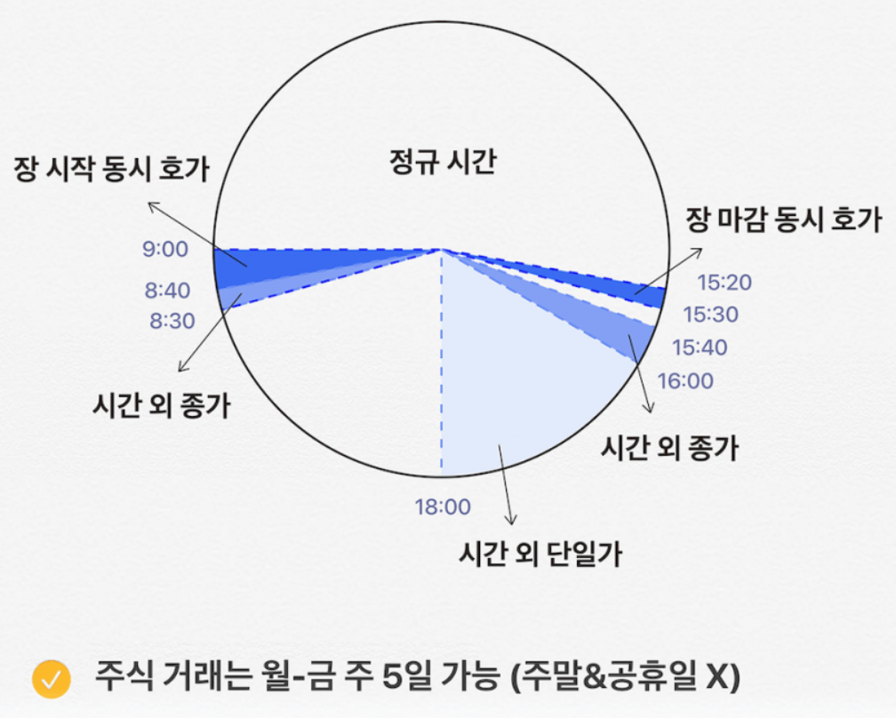

- 계좌를 만드는 방법은 2가지가 있습니다.
1 대면개설: 증권사에 직접가서 계좌를 개설하는 방법입니다.
2 비대면개설: PC나 스마트폰을 이용하여 증권사에 가지 않고 계좌를 개설하는 방법입니다.
- 대면개설 방법: 신분증을 가지고 증권사 지점을 방문하여 만드는 방법입니다.
- 비대면개설 방법
1 대면개설: 증권사에 직접가서 계좌를 개설하는 방법입니다.
2 비대면개설: PC나 스마트폰을 이용하여 증권사에 가지 않고 계좌를 개설하는 방법입니다.
- 대면개설 방법: 신분증을 가지고 증권사 지점을 방문하여 만드는 방법입니다.
- 비대면개설 방법
1. PC 개설 방법
- 개설하고자하는 증권사의 홈페이지에 접속하여 계좌를 개설합니다.
- 개설하고자하는 증권사의 홈페이지에 접속하여 계좌를 개설합니다.
(단, 공인인증서가 사용가능한 컴퓨터여야 합니다.)
2. 스마트폰 개설방법
- 스마트폰의 앱스토어 or 구글 플레이스토어에 다운받고자하는 증권사를 검색해서 다운합니다.
- 보통 "증권사 앱" 이나 "증권사 계좌 개설용 앱" 이 나오는데 둘 중에 하나를 고르셔서 들어가도 계좌개설 안내가 뜹니다.
- 어플 설치 후 접속하여 각 어플의 안내에 따라서 회원가입을 하시면 됩니다.
- 스마트폰의 앱스토어 or 구글 플레이스토어에 다운받고자하는 증권사를 검색해서 다운합니다.
- 보통 "증권사 앱" 이나 "증권사 계좌 개설용 앱" 이 나오는데 둘 중에 하나를 고르셔서 들어가도 계좌개설 안내가 뜹니다.
- 어플 설치 후 접속하여 각 어플의 안내에 따라서 회원가입을 하시면 됩니다.
- 증
권
계
좌
란
?
현금을 보내거나 받기 위해서 은행예금통장을 이용하듯이, 증권 (주식이나 채권)을 주고받기 위해서는 '증권계좌'가 있어야 합니다. '증권계좌'는 은행이 아닌 증권사에서 만드실 수 있고, 증권계좌의 종류는 아주 다양하기에 본인에게 맞는 것을 선택하시면 됩니다.
- 증
권
사
선
택
이
중
요
한
이
유
한번 돈을 맡기면 이후에 돈을 옮기는 절차가 복잡하고 좀처럼 다른 증권사 계좌로 이동하는것이 쉽지 않습니다. 이런 불편함이 지속되면 좋은 투자시기가 지연되면서 좋은 기회를 놓칠 우려가 있기 때문에 처음 선택하는 증권사는 중요합니다.
- 계
좌
개
설
고
려
사
항
자신이 투자하고 싶은 상품이 무엇인지를 명확하게 해야합니다.
반드시 투자하고자하는 금융상품이 해당 증권사에 있는 상품인지, 자유롭게 투자가 가능한지를 확인해야합니다.
< 증권사 순위 종합평가 >
< 증권사 순위 안정성 평가 >
- 미래애셋대우 (이벤트 보러가기)
- 삼성증권 (이벤트 보러가기)
- NH투자증권 (이벤트 보러가기)
- KB증권(이벤트 보러가기)
- 한국투자증권(이벤트 보러가기)
- 미래애셋대우 (이벤트 보러가기)
- NH투자증권(이벤트 보러가기)
- 삼성증권(이벤트 보러가기)
- KB증권(이벤트 보러가기)
- 하나금융투자(이벤트 보러가기)
주식거래수수료 비교해보기
현금
신용
구분
수량:
단가:
시장
현금매수
- 1. 주식 매수주문은 거래시간에 해야합니다. 거래시간이 아닐때 넣은 주문은 무효처리 됩니다.(주식 타임 테이블 참고)
- 2. 매수하고자하는 종목에 들어갑니다.
- 3. 현금매수를 클릭합니다.
- 4. 매수 주문 종류를 선택합니다.
- 5. 매수 희망가를 입력 후 수량을 입력한 뒤 매수버튼을 누르면 됩니다.
